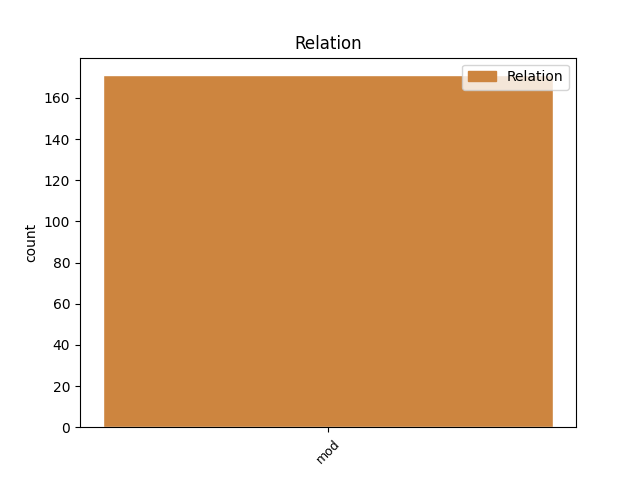
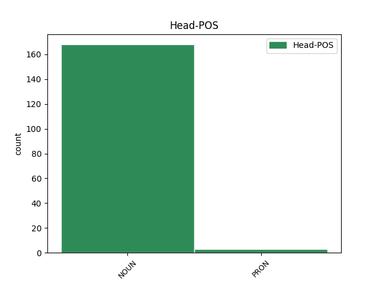
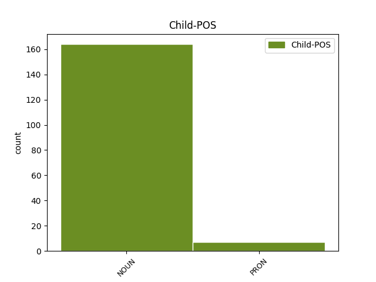

Distribution of features within this leaf



Agreement Rules sorted by frequency.
- When the dependent token is the modifer(mod) of the head token, and the head token is NOUN and the dependent token is NOUN.
1 Aangevuur _ _ _ _ 0 _ _ _
2 deur _ _ _ _ 0 _ _ _
3 die _ _ _ _ 0 _ _ _
4 begeerte _ _ _ _ 0 _ _ _
5 om _ _ _ _ 0 _ _ _
6 die _ _ _ _ 0 _ _ _
7 verbetering _ _ _ _ 0 _ _ _
8 van _ _ _ _ 0 _ _ _
9 die _ _ _ _ 0 _ _ _
10 lewensgehalte _ _ _ _ 0 _ _ _
11 van _ _ _ _ 0 _ _ _
12 alle _ _ _ _ 0 _ _ _
13 mense _ _ _ _ 0 _ _ _
14 aan _ _ _ _ 0 _ _ _
15 te _ _ _ _ 0 _ _ _
16 moedig _ _ _ _ 0 _ _ _
17 , _ _ _ _ 0 _ _ _
18 veral _ _ _ _ 0 _ _ _
19 in _ _ _ _ 0 _ _ _
20 die _ _ _ _ 0 _ _ _
21 ontwikkelende _ _ _ _ 0 _ _ _
22 lande _ _ _ _ 0 _ _ _
23 , _ _ _ _ 0 _ _ _
24 sal _ _ _ _ 0 _ _ _
25 ons _ _ _ _ 0 _ _ _
26 daarop _ _ _ _ 0 _ _ _
27 konsentreer _ _ _ _ 0 _ _ _
28 om _ _ _ _ 0 _ _ _
29 ons _ _ _ _ 0 _ _ _
30 deelname _ _ _ _ 0 _ _ _
31 uit _ _ _ _ 0 _ _ _
32 te _ _ _ _ 0 _ _ _
33 brei _ _ _ _ 0 _ _ _
34 in _ _ _ _ 0 _ _ _
35 die _ _ _ _ 0 _ _ _
36 Indië-Brasilië-Suid-Afrika-forums _ _ _ _ 0 _ _ _
37 , _ _ _ _ 0 _ _ _
38 die _ _ _ _ 0 _ _ _
39 nuwe _ _ _ _ 0 _ _ _
40 Afrika-Asië _ _ _ _ 0 _ _ _
41 Strategiese _ _ _ _ 0 _ _ _
42 Vennootskap _ _ _ _ 0 _ _ _
43 , _ _ _ _ 0 _ _ _
44 die _ _ _ _ 0 _ _ _
45 Onverbonde _ _ _ _ 0 _ _ _
46 Beweging _ _ _ _ 0 _ _ _
47 , _ _ _ _ 0 _ _ _
48 die _ _ _ _ 0 _ _ _
49 Groep _ _ _ _ 0 _ _ _
50 van _ _ _ _ 0 _ _ _
51 77 _ _ _ _ 0 _ _ _
52 en _ _ _ _ 0 _ _ _
53 in _ _ _ _ 0 _ _ _
54 die _ _ _ _ 0 _ _ _
55 onderhandelings _ _ _ _ 0 _ _ _
56 om _ _ _ _ 0 _ _ _
57 die _ _ _ _ 0 _ _ _
58 Suider-Afrikaanse _ _ _ _ 0 _ _ _
59 Doeane-unie doeane-unie NOUN NSE Number=Sing 61 mod _ _
60 (SACU)-Mercusor _ _ _ _ 0 _ _ _
61 handelsooreenkoms handelsooreenkoms NOUN NSE Number=Sing 0 _ _ _
62 af _ _ _ _ 0 _ _ _
63 te _ _ _ _ 0 _ _ _
64 handel _ _ _ _ 0 _ _ _
65 . _ _ _ _ 0 _ _ _
1 'n _ _ _ _ 0 _ _ _
2 Buitelandse _ _ _ _ 0 _ _ _
3 visvaartuig _ _ _ _ 0 _ _ _
4 is _ _ _ _ 0 _ _ _
5 'n _ _ _ _ 0 _ _ _
6 vaartuig _ _ _ _ 0 _ _ _
7 wat _ _ _ _ 0 _ _ _
8 deur _ _ _ _ 0 _ _ _
9 'n _ _ _ _ 0 _ _ _
10 nie-Suid-Afrikaanse _ _ _ _ 0 _ _ _
11 burger burger NOUN NSE Number=Sing 0 _ _ _
12 , _ _ _ _ 0 _ _ _
13 dit dit PRON PDOENP Case=Nom|Number=Sing|Person=3|PronType=Prs 11 mod _ _
14 wil _ _ _ _ 0 _ _ _
15 sê _ _ _ _ 0 _ _ _
16 'n _ _ _ _ 0 _ _ _
17 buitelander _ _ _ _ 0 _ _ _
18 , _ _ _ _ 0 _ _ _
19 besit _ _ _ _ 0 _ _ _
20 word _ _ _ _ 0 _ _ _
21 en _ _ _ _ 0 _ _ _
22 onder _ _ _ _ 0 _ _ _
23 'n _ _ _ _ 0 _ _ _
24 ander _ _ _ _ 0 _ _ _
25 vlagstaat _ _ _ _ 0 _ _ _
26 as _ _ _ _ 0 _ _ _
27 die _ _ _ _ 0 _ _ _
28 Republiek _ _ _ _ 0 _ _ _
29 van _ _ _ _ 0 _ _ _
30 Suid-Afrika _ _ _ _ 0 _ _ _
31 ( _ _ _ _ 0 _ _ _
32 RSA _ _ _ _ 0 _ _ _
33 ) _ _ _ _ 0 _ _ _
34 geregistreer _ _ _ _ 0 _ _ _
35 is _ _ _ _ 0 _ _ _
36 . _ _ _ _ 0 _ _ _
Disagree Examples:
1 Inligting _ _ _ _ 0 _ _ _
2 ten _ _ _ _ 0 _ _ _
3 opsigte _ _ _ _ 0 _ _ _
4 van _ _ _ _ 0 _ _ _
5 elke _ _ _ _ 0 _ _ _
6 diens _ _ _ _ 0 _ _ _
7 is _ _ _ _ 0 _ _ _
8 volgens _ _ _ _ 0 _ _ _
9 sewe _ _ _ _ 0 _ _ _
10 sleutelareas _ _ _ _ 0 _ _ _
11 gerangskik _ _ _ _ 0 _ _ _
12 , _ _ _ _ 0 _ _ _
13 naamlik _ _ _ _ 0 _ _ _
14 beskrywing beskrywing NOUN NSE Number=Sing 0 _ _ _
15 , _ _ _ _ 0 _ _ _
16 stappe stap NOUN NSM Number=Plur 14 mod _ _
17 om _ _ _ _ 0 _ _ _
18 te _ _ _ _ 0 _ _ _
19 volg _ _ _ _ 0 _ _ _
20 , _ _ _ _ 0 _ _ _
21 wetlike _ _ _ _ 0 _ _ _
22 raamwerk _ _ _ _ 0 _ _ _
23 , _ _ _ _ 0 _ _ _
24 diensstandaard _ _ _ _ 0 _ _ _
25 ; _ _ _ _ 0 _ _ _
26 koste _ _ _ _ 0 _ _ _
27 , _ _ _ _ 0 _ _ _
28 vorms _ _ _ _ 0 _ _ _
29 om _ _ _ _ 0 _ _ _
30 in _ _ _ _ 0 _ _ _
31 te _ _ _ _ 0 _ _ _
32 vul _ _ _ _ 0 _ _ _
33 , _ _ _ _ 0 _ _ _
34 en _ _ _ _ 0 _ _ _
35 kontakbesonderhede _ _ _ _ 0 _ _ _
36 . _ _ _ _ 0 _ _ _
1 Inligting _ _ _ _ 0 _ _ _
2 ten _ _ _ _ 0 _ _ _
3 opsigte _ _ _ _ 0 _ _ _
4 van _ _ _ _ 0 _ _ _
5 elke _ _ _ _ 0 _ _ _
6 diens _ _ _ _ 0 _ _ _
7 is _ _ _ _ 0 _ _ _
8 volgens _ _ _ _ 0 _ _ _
9 sewe _ _ _ _ 0 _ _ _
10 sleutelareas _ _ _ _ 0 _ _ _
11 gerangskik _ _ _ _ 0 _ _ _
12 , _ _ _ _ 0 _ _ _
13 naamlik _ _ _ _ 0 _ _ _
14 beskrywing _ _ _ _ 0 _ _ _
15 , _ _ _ _ 0 _ _ _
16 stappe _ _ _ _ 0 _ _ _
17 om _ _ _ _ 0 _ _ _
18 te _ _ _ _ 0 _ _ _
19 volg _ _ _ _ 0 _ _ _
20 , _ _ _ _ 0 _ _ _
21 wetlike _ _ _ _ 0 _ _ _
22 raamwerk _ _ _ _ 0 _ _ _
23 , _ _ _ _ 0 _ _ _
24 diensstandaard _ _ _ _ 0 _ _ _
25 ; _ _ _ _ 0 _ _ _
26 koste koste NOUN NSE Number=Sing 0 _ _ _
27 , _ _ _ _ 0 _ _ _
28 vorms vorm NOUN NSM Number=Plur 26 mod _ _
29 om _ _ _ _ 0 _ _ _
30 in _ _ _ _ 0 _ _ _
31 te _ _ _ _ 0 _ _ _
32 vul _ _ _ _ 0 _ _ _
33 , _ _ _ _ 0 _ _ _
34 en _ _ _ _ 0 _ _ _
35 kontakbesonderhede _ _ _ _ 0 _ _ _
36 . _ _ _ _ 0 _ _ _
1 Gaan _ _ _ _ 0 _ _ _
2 na _ _ _ _ 0 _ _ _
3 die _ _ _ _ 0 _ _ _
4 Korting-blokkie _ _ _ _ 0 _ _ _
5 in _ _ _ _ 0 _ _ _
6 die _ _ _ _ 0 _ _ _
7 deel deel NOUN NSE Number=Sing 0 _ _ _
8 Kliënttipes kliënttipe NOUN NSM Number=Plur 7 mod _ _
9 ( _ _ _ _ 0 _ _ _
10 A _ _ _ _ 0 _ _ _
11 ) _ _ _ _ 0 _ _ _
12 van _ _ _ _ 0 _ _ _
13 die _ _ _ _ 0 _ _ _
14 Registrasie-gedeelte _ _ _ _ 0 _ _ _
15 . _ _ _ _ 0 _ _ _
1 Vangsstatistiek-dokumente _ _ _ _ 0 _ _ _
2 is _ _ _ _ 0 _ _ _
3 by _ _ _ _ 0 _ _ _
4 die _ _ _ _ 0 _ _ _
5 Departement departement NOUN NSE Number=Sing 0 _ _ _
6 Omgewingsake omgewingsaak NOUN NSM Number=Plur 5 mod _ _
7 en _ _ _ _ 0 _ _ _
8 Toerisme _ _ _ _ 0 _ _ _
9 , _ _ _ _ 0 _ _ _
10 Tak _ _ _ _ 0 _ _ _
11 : _ _ _ _ 0 _ _ _
12 Mariene _ _ _ _ 0 _ _ _
13 en _ _ _ _ 0 _ _ _
14 Kusbestuur _ _ _ _ 0 _ _ _
15 , _ _ _ _ 0 _ _ _
16 Direktoraat _ _ _ _ 0 _ _ _
17 Kus- _ _ _ _ 0 _ _ _
18 en _ _ _ _ 0 _ _ _
19 Diepseevisserybestuur _ _ _ _ 0 _ _ _
20 te _ _ _ _ 0 _ _ _
21 kry _ _ _ _ 0 _ _ _
22 . _ _ _ _ 0 _ _ _
1 Slegs _ _ _ _ 0 _ _ _
2 bevrore _ _ _ _ 0 _ _ _
3 heel _ _ _ _ 0 _ _ _
4 krap _ _ _ _ 0 _ _ _
5 ( _ _ _ _ 0 _ _ _
6 of _ _ _ _ 0 _ _ _
7 stukke stuk NOUN NSM Number=Plur 0 _ _ _
8 krap krap NOUN NM Number=Sing 7 mod _ SpaceAfter=No
9 ) _ _ _ _ 0 _ _ _
10 wat _ _ _ _ 0 _ _ _
11 wat _ _ _ _ 0 _ _ _
12 elk _ _ _ _ 0 _ _ _
13 600 _ _ _ _ 0 _ _ _
14 g _ _ _ _ 0 _ _ _
15 of _ _ _ _ 0 _ _ _
16 meer _ _ _ _ 0 _ _ _
17 weeg _ _ _ _ 0 _ _ _
18 , _ _ _ _ 0 _ _ _
19 en _ _ _ _ 0 _ _ _
20 hoogstens _ _ _ _ 0 _ _ _
21 25 _ _ _ _ 0 _ _ _
22 ton _ _ _ _ 0 _ _ _
23 daarvan _ _ _ _ 0 _ _ _
24 , _ _ _ _ 0 _ _ _
25 mag _ _ _ _ 0 _ _ _
26 ( _ _ _ _ 0 _ _ _
27 jaarliks _ _ _ _ 0 _ _ _
28 ) _ _ _ _ 0 _ _ _
29 ingevoer _ _ _ _ 0 _ _ _
30 word _ _ _ _ 0 _ _ _
31 . _ _ _ _ 0 _ _ _